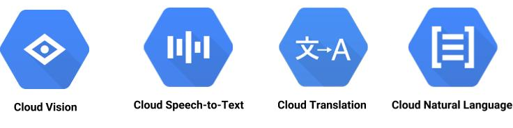
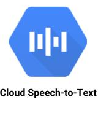
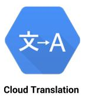
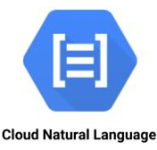
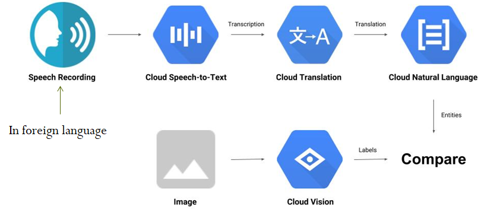
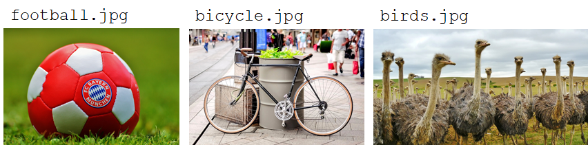
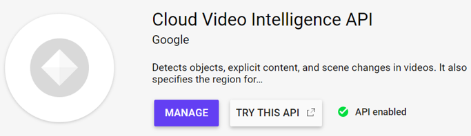
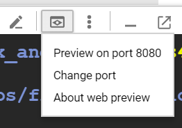
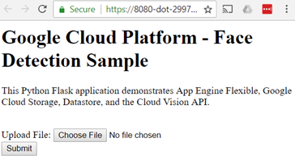
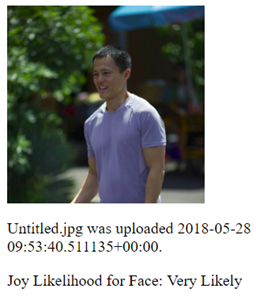

In this lab, you will try out a variety of Machine Learning APIs that Google Cloud Platform supports including Vision, Speech, Translate, and Natural Language Processing using Google Cloud SDK's Python packages

Bring up a Cloud Shell session, ensure the APIs are enabled, then clone the Python samples repository in your home directory.
gcloud services enable \
speech.googleapis.com \
translate.googleapis.com \
language.googleapis.com \
vision.googleapis.com
git clone https://github.com/GoogleCloudPlatform/python-docs-samples.git
Then, create a Python 3 virtual environment and activate it:
virtualenv -p python3 env source env/bin/activate
There are several options for authorizing access to APIs on Google Cloud Platform. If you are accessing the APIs from external locations and require access that is done per-user, either API keys or OAuth-based access tokens can be used. On the other hand, if you are accessing the APIs from within Google Cloud (as is the case for this lab), then it is recommended that you create a service account and issue credentials for it that can be bound to your application.
In your home directory on Cloud Shell, create a new service account for this lab using gcloud .
gcloud iam service-accounts create cs430mlapisWe will need to add a role to this service account that allows it to use the Machine Learning services for the lab. To do so, add a policy binding to the account to enable service usage:
gcloud projects add-iam-policy-binding ${GOOGLE_CLOUD_PROJECT} \
--member serviceAccount:cs430mlapis@${GOOGLE_CLOUD_PROJECT}.iam.gserviceaccount.com \
--role roles/serviceusage.serviceUsageConsumerThen, issue a service account key for the account and download it to a local JSON file.
gcloud iam service-accounts keys create cs430mlapis.json \
--iam-account cs430mlapis@${GOOGLE_CLOUD_PROJECT}.iam.gserviceaccount.comA special environment variable GOOGLE_APPLICATION_CREDENTIALS is used for applications to access the service account key. Set the variable to point to the JSON file.
export GOOGLE_APPLICATION_CREDENTIALS=$HOME/cs430mlapis.jsonNote that this will only set the variable for the current Cloud Shell session. If you wish to always set this variable, you can add this line to $HOME/.bashrc
Install the Cloud Vision package from the SDK then change into the directory containing the cloud-client code:
pip install google-cloud-vision cd ~/python-docs-samples/vision/snippets/detect
Run a detection that returns the labels generated with an image given its URI
python detect.py labels-uri gs://cloud-samples-data/ml-api-codelab/birds.jpg
Open up detect.py. Given the arguments of the above command, find the function that is called which handles this particular detection.
Answer the following questions:
The Vision API can also detect logos in images. Go back to detect.py and find how it can be used to perform a logo detection on a local file. Then, using Google Images, download an image of a university logo to Cloud Shell via wget. Invoke detect.py to call the Vision API to determine whose logo it is.
wget <URL_OF_IMAGE> -O <IMAGE_FILE> python detect.py <logo_function> <IMAGE_FILE>

Install the Cloud Speech package from the SDK then change into the directory containing the cloud-client code:
pip install google-cloud-speech cd ~/python-docs-samples/speech/snippets
Run a detection that returns the translation of a raw audio clip:
python transcribe.py resources/audio.raw
Open up transcribe.py. Given the arguments of the above command, find the function that is called which handles this particular translation.
Answer the following questions:

Install the Cloud Translate package from the SDK then change into the directory containing the cloud-client code:
pip install google-cloud-translate cd ~/python-docs-samples/translate/samples/snippets
In the repository, examine snippets.py. Note that the program uses an older version of the Translate API that must be explicitly identified. The import statement below does so throughout the script:
from google.cloud import translate_v2 as translateRun a detection that returns the English translation of a Chinese sentence.
python snippets.py translate-text en '你有沒有帶外套'
Open up snippets.py. Given the arguments of the above command, find the function that is called which handles this particular translation.
Answer the following questions:

Install the Cloud Natural Language package from the SDK:
pip install google-cloud-language
Create a file called language.py that takes a text string, performs sentiment analysis on it, and then pulls out the entities in the text.
from google.cloud import language
import sys
client = language.LanguageServiceClient()
text = sys.argv[1]
request = {'document' : {"type_": language.Document.Type.PLAIN_TEXT, "content": text}}
sentiment = client.analyze_sentiment(request).document_sentiment
entities = client.analyze_entities(request).entities
print(f'"{text}" has sentiment={sentiment.score}\n')
print("Entities are:")
for entity in entities:
print(f'name: {entity.name}')Run the following analyses:
python language.py 'homework is awful!' python language.py 'homework is ok' python language.py 'homework is awesome?' python language.py 'homework is awesome!' python language.py 'The protestors in Oregon put on gas masks and wore yellow t-shirts'
We will now go through an example of how the APIs can be integrated. In this part, a speech recording in a foreign language and an image are given. The speech recording is given to the Speech API to get a transcription, then sent to the Translate API to get an English translation. This translation is then sent to the Natural Language API to determine the entities in the translation. The image is given to the Vision API to determine the entities (labels) in it. Finally, the entity lists are compared to determine if the speech recording and image have entities in common.

Go back to Cloud Shell and ensure that your environment variable for specifying your credentials is set. Create the Python script below:
#!/usr/bin/env python
# Copyright 2018 Google Inc. All Rights Reserved.
#
# Licensed under the Apache License, Version 2.0 (the "License");
# you may not use this file except in compliance with the License.
# You may obtain a copy of the License at
#
# http://www.apache.org/licenses/LICENSE-2.0
#
# Unless required by applicable law or agreed to in writing, software
# distributed under the License is distributed on an "AS IS" BASIS,
# WITHOUT WARRANTIES OR CONDITIONS OF ANY KIND, either express or implied.
# See the License for the specific language governing permissions and
# limitations under the License.
import argparse
from google.cloud import vision
from google.cloud import speech
from google.cloud import translate_v2 as translate
from google.cloud import language
import six
def detect_labels_uri(uri):
"""Detects labels in the file located in Google Cloud Storage or on the
Web."""
# create ImageAnnotatorClient object
client = vision.ImageAnnotatorClient()
# create Image object
image = vision.Image()
# specify location of image
image.source.image_uri = uri
# get label_detection response by passing image to client
response = client.label_detection(image=image)
# get label_annotations portion of response
labels = response.label_annotations
# we only need the label descriptions
label_descriptions = []
for label in labels:
label_descriptions.append(label.description)
return label_descriptions
def transcribe_gcs(language, gcs_uri):
"""Transcribes the audio file specified by the gcs_uri."""
# create ImageAnnotatorClient object
client = speech.SpeechClient()
# specify location of speech
audio = speech.RecognitionAudio(uri=gcs_uri) # need to specify speech.types
# set language to Turkish
# removed encoding and sample_rate_hertz
config = speech.RecognitionConfig(language_code=language) # need to specify speech.types
# get response by passing config and audio settings to client
response = client.recognize(config=config, audio=audio)
# naive assumption that audio file is short
return response.results[0].alternatives[0].transcript
def translate_text(target, text):
"""Translates text into the target language.
Target must be an ISO 639-1 language code.
See https://g.co/cloud/translate/v2/translate-reference#supported_languages
"""
# create Client object
translate_client = translate.Client()
# decode text if it's a binary type
if isinstance(text, six.binary_type):
text = text.decode('utf-8')
# get translation result by passing text and target language to client
# Text can also be a sequence of strings, in which case this method
# will return a sequence of results for each text.
result = translate_client.translate(text, target_language=target)
# only interested in translated text
return result['translatedText']
def entities_text(text):
"""Detects entities in the text."""
# create LanguageServiceClient object
client = language.LanguageServiceClient()
# decode text if it's a binary type
if isinstance(text, six.binary_type):
text = text.decode('utf-8')
# Instantiates a plain text document.
# need to specify language.types
request = {'document' : {"type_": language.Document.Type.PLAIN_TEXT, "content": text}}
entities = client.analyze_entities(request).entities
# we only need the entity names
entity_names = []
for entity in entities:
entity_names.append(entity.name)
return entity_names
def compare_audio_to_image(language, audio, image):
"""Checks whether a speech audio is relevant to an image."""
# speech audio -> text
transcription = transcribe_gcs(language, audio)
print(f'Transcription: {transcription}')
# text of any language -> english text
translation = translate_text('en', transcription)
print(f'Translation: {translation}')
# text -> entities
entities = entities_text(translation)
print(f'Entities: {entities}')
# image -> labels
labels = detect_labels_uri(image)
print(f'Image labels: {labels}')
# naive check for whether entities intersect with labels
has_match = False
for entity in entities:
if entity in labels:
print('The audio and image both contain: {}'.format(entity))
has_match = True
if not has_match:
print('The audio and image do not appear to be related.')
if __name__ == '__main__':
parser = argparse.ArgumentParser(
description=__doc__,
formatter_class=argparse.RawDescriptionHelpFormatter)
parser.add_argument(
'language', help='Language code of speech audio')
parser.add_argument(
'audio', help='GCS path for audio file to be recognised')
parser.add_argument(
'image', help='GCS path for image file to be analysed')
args = parser.parse_args()
compare_audio_to_image(args.language, args.audio, args.image)To see the intermediate results given to the Python script from the various APIs that it uses, the script contains print() statements after the calls to each function to see the output returned in compare_audio_to_image():
Examine the code and answer the following questions:
We will now run the code to perform detections. Audio files in Turkish and German as well as images related to them are stored in a folder in a public bucket: gs://cloud-samples-data/ml-api-codelab
The images are shown below:

Run the following test.
python solution.py de-DE gs://cloud-samples-data/ml-api-codelab/de-ball.wav gs://cloud-samples-data/ml-api-codelab/football.jpg
Run the following test.
python solution.py tr-TR gs://cloud-samples-data/ml-api-codelab/tr-bike.wav gs://cloud-samples-data/ml-api-codelab/bicycle.jpg
Run the following test.
python solution.py tr-TR gs://cloud-samples-data/ml-api-codelab/tr-ostrich.wav gs://cloud-samples-data/ml-api-codelab/birds.jpg
The Video Intelligence API analyzes video streams, pulling out the entities and activities within them. In this lab, we will sample some of its features. Begin by going to "APIs & Services" in the web console, searching for "Video Intelligence" and enabling the API.

Alternatively, it may be enabled via the command-line interface.
gcloud services enable videointelligence.googleapis.com
Ensure the Python 3 environment previously created is activated, install the Video Intelligence package from the SDK.
pip install google-cloud-videointelligence
The goal of this lab is to run a detection that returns the entities in a video. The video can be found on YouTube here as well as on the course site as an mp4 file here. Watch the video to get an understanding of what is in it.
The Video Intelligence API can take a gs:// URI for the video. In Cloud Shell, create a unique storage bucket to store the video in.
gsutil mb gs://<UNIQUE_BUCKET_NAME>
We will be using this bucket name in subsequent commands so set an environment variable with its name.
export CLOUD_STORAGE_BUCKET=<UNIQUE_BUCKET_NAME>
Configure the bucket to be publicly readable and to have it the default permissions on objects created to also be publicly readable.
gsutil acl set public-read gs://${CLOUD_STORAGE_BUCKET}
gsutil defacl set public-read gs://${CLOUD_STORAGE_BUCKET}
Then, download the video from the course site and copy it to the bucket.
curl https://thefengs.com/wuchang/courses/cs430/SportsBloopers2016.mp4 | gsutil -h "Content-Type:video/mp4" cp - gs://${CLOUD_STORAGE_BUCKET}/SportsBloopers2016.mp4
We will use a modified version of a labeling script for the Video Intelligence API shown below. This has been adapted from an earlier version of the script in order to work with version 2 of the Video Intelligence API. Create the file below in Cloud Shell.
#!/usr/bin/env python
# Copyright 2017 Google Inc. All Rights Reserved.
#
# Licensed under the Apache License, Version 2.0 (the "License");
# you may not use this file except in compliance with the License.
# You may obtain a copy of the License at
#
# http://www.apache.org/licenses/LICENSE-2.0
#
# Unless required by applicable law or agreed to in writing, software
# distributed under the License is distributed on an "AS IS" BASIS,
# WITHOUT WARRANTIES OR CONDITIONS OF ANY KIND, either express or implied.
# See the License for the specific language governing permissions and
# limitations under the License.
"""This application demonstrates how to detect labels from a video
based on the image content with the Google Cloud Video Intelligence
API.
For more information, check out the documentation at
https://cloud.google.com/videointelligence/docs.
Usage Example:
python labels.py gs://cloud-ml-sandbox/video/chicago.mp4
"""
import argparse
from google.cloud import videointelligence
def analyze_labels(path):
""" Detects labels given a GCS path. """
video_client = videointelligence.VideoIntelligenceServiceClient()
features = [videointelligence.Feature.LABEL_DETECTION]
operation = video_client.annotate_video(input_uri=path, features=features)
print('\nProcessing video for label annotations:')
result = operation.result(timeout=90)
print('\nFinished processing.')
segment_labels = result.annotation_results[0].segment_label_annotations
for i, segment_label in enumerate(segment_labels):
print('Video label description: {}'.format(
segment_label.entity.description))
for category_entity in segment_label.category_entities:
print('\tLabel category description: {}'.format(
category_entity.description))
for i, segment in enumerate(segment_label.segments):
start_time = segment.segment.start_time_offset.seconds
end_time = segment.segment.end_time_offset.seconds
positions = '{}s to {}s'.format(start_time, end_time)
confidence = segment.confidence
print('\tSegment {}: {}'.format(i, positions))
print('\tConfidence: {}'.format(confidence))
print('\n')
if __name__ == '__main__':
parser = argparse.ArgumentParser(
description=__doc__,
formatter_class=argparse.RawDescriptionHelpFormatter)
parser.add_argument('path', help='GCS file path for label detection.')
args = parser.parse_args()
analyze_labels(args.path)Using the file created, run a detection that returns the labels generated with a video given its URI
python labels.py gs://${CLOUD_STORAGE_BUCKET}/SportsBloopers2016.mp4
Answer the following for your lab notebook.
Open up labels.py. Answer the following questions:
We will now show an example of a Python/Flask web application running in App Engine that uses the Vision API. Begin by ensuring that the Python environment set up previously has been activated. Then, checkout a prior version of the repository containing the application code and then change into the code directory.
cd ~/python-docs-samples git checkout cfa9a88c9349fa198763ac3c05a16fe9a0330625 cd codelabs/flex_and_vision
This lab requires a storage bucket to store the images uploaded by a client. We will reuse the one in the previous lab (e.g. gs://${CLOUD_STORAGE_BUCKET}).
For this application, we will require access to both Cloud Storage and Cloud Datastore. It's good practice to set up another service account and add the appropriate policies to it to get the permissions added. In your home directory on Cloud Shell, create a new service account for this lab .
gcloud iam service-accounts create cs430flexWe'll now add permissions to this account via policies. The first set of permissions allows the application to list and create objects in a storage bucket. GCP provides pre-defined roles that we can attach to the service account. Use the command below to add the "Storage Admin" role to the service account.
gcloud projects add-iam-policy-binding ${GOOGLE_CLOUD_PROJECT} \
--member serviceAccount:cs430flex@${GOOGLE_CLOUD_PROJECT}.iam.gserviceaccount.com \
--role roles/storage.admin
Our application will also be reading and writing entries into Cloud Datastore. In this case, the "Datastore User" role is sufficient for the application. The command below adds the role to the service account.
gcloud projects add-iam-policy-binding ${GOOGLE_CLOUD_PROJECT} \
--member serviceAccount:cs430flex@${GOOGLE_CLOUD_PROJECT}.iam.gserviceaccount.com \
--role roles/datastore.user
We will also need to be able to access the Machine Learning services for the lab. As before, the command below does so:
gcloud projects add-iam-policy-binding ${GOOGLE_CLOUD_PROJECT} \
--member serviceAccount:cs430flex@${GOOGLE_CLOUD_PROJECT}.iam.gserviceaccount.com \
--role roles/serviceusage.serviceUsageConsumer
With the permissions set, issue a service account key and download it to a local JSON file.
gcloud iam service-accounts keys create ~/cs430flex.json \
--iam-account cs430flex@${GOOGLE_CLOUD_PROJECT}.iam.gserviceaccount.com
Finally, set GOOGLE_APPLICATION_CREDENTIALS to point to the service account key.
export GOOGLE_APPLICATION_CREDENTIALS=$HOME/cs430flex.jsonIn this application, a form for uploading an image is implemented. Upon upload, the web application copies the image over to the storage bucket. Then, the application calls the Vision API's sentiment analysis function with the storage bucket URI of the image to determine if the image contains an expression of "Joy". The result of the analysis is stored in Cloud Datastore. The page is then updated to show all of the images that have been uploaded and their sentiment ratings.
Install the application's packages:
pip install -r requirements.txt
Then, bring up the application using Cloud Shell's development server. Note that if you get a permission error, exit the application and wait for the IAM credentials to fully propagate.
python main.py
Test the application via the web preview or clicking on the link returned by Python (http://127.0.0.1:8080).

You should see the following form:

Upload a photo to detect joy in faces:

Open main.py and view the code for the default route.
Answer the following questions:
Then, view the upload_photo route.
upload_photo route?Go to IAM in the web console and delete the service accounts created in this lab. This may also be done in Cloud Shell via gcloud :
gcloud iam service-accounts delete cs430mlapis@${GOOGLE_CLOUD_PROJECT}.iam.gserviceaccount.com
gcloud iam service-accounts delete cs430flex@${GOOGLE_CLOUD_PROJECT}.iam.gserviceaccount.comDelete the service account keys you've downloaded:
rm /home/${USER}/cs430flex.json /home/${USER}/cs430mlapis.json
Optionally remove the policy bindings which no longer apply now that the service accounts have been deleted:
gcloud projects remove-iam-policy-binding ${GOOGLE_CLOUD_PROJECT} --member=serviceAccount:cs430flex@${GOOGLE_CLOUD_PROJECT}.iam.gserviceaccount.com --role=roles/storage.admin
gcloud projects remove-iam-policy-binding ${GOOGLE_CLOUD_PROJECT} --member=serviceAccount:cs430flex@${GOOGLE_CLOUD_PROJECT}.iam.gserviceaccount.com --role=roles/datastore.user
gcloud projects remove-iam-policy-binding ${GOOGLE_CLOUD_PROJECT} --member=serviceAccount:cs430flex@${GOOGLE_CLOUD_PROJECT}.iam.gserviceaccount.com --role=roles/serviceusage.serviceUsageConsumer
Delete the bucket
gsutil -m rm -r gs://${CLOUD_STORAGE_BUCKET}